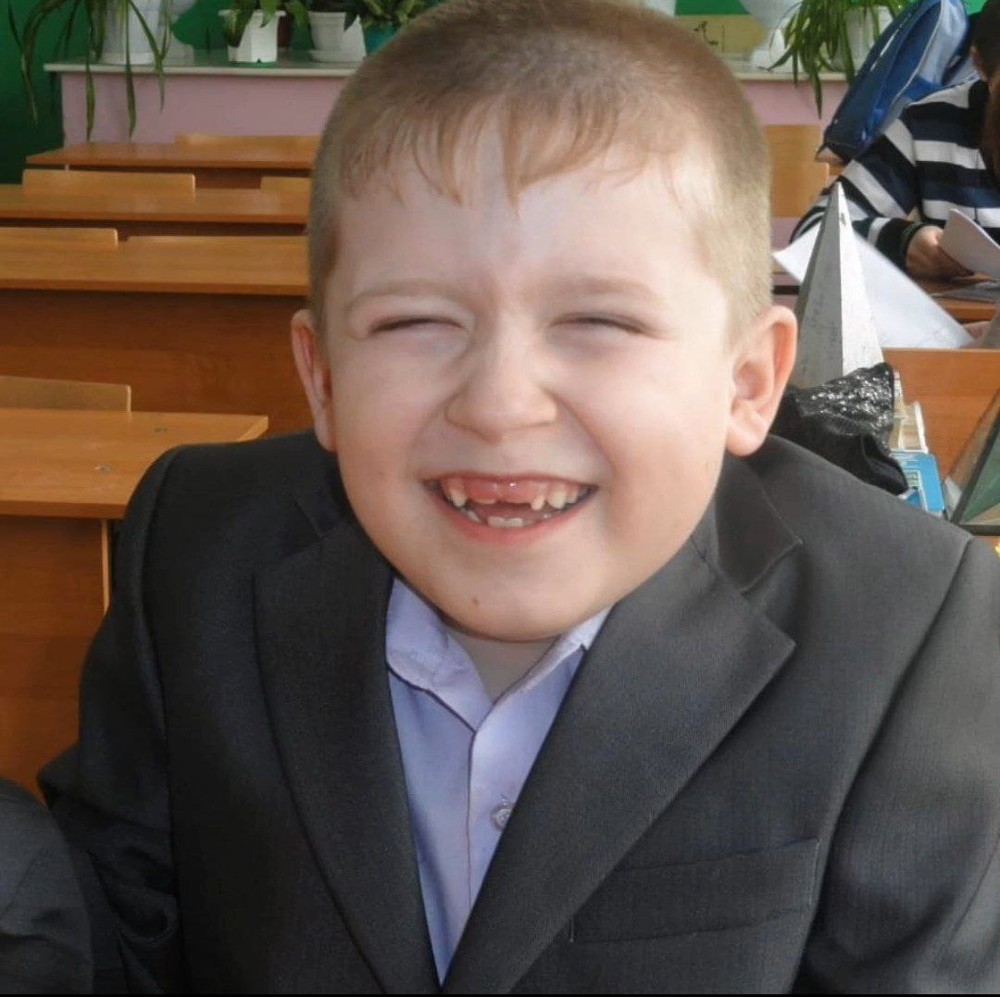

Артём Баранов родился 12 февраля 2005 года в селе Можайское, расположенном в колоритном Каширском районе Воронежской области. Это маленькое село славится своими дружелюбными жителями и живописной природой. «Я из простой семьи, и я жил очень долго этой жизнью, практически всю свою сознательную жизнь. Я жил как рядовой нормальный человек, и у меня всегда сохраняется эта связь», – вспоминает Баранов.
С 2011 по 2022 год Артём Баранов обучался в Можайской школе своего родного села. В начальных классах он активно участвовал в школьных праздниках, прилежно учился, занимался боксом и посещал музыкальную школу, осваивая игру на гитаре. В подростковом возрасте, учась в средней школе, Артём успешно участвовал в конкурсах чтецов, заняв первое место в соревнованиях по декламации стихов ко Дню Победы. Он был неотъемлемой частью школьной жизни, регулярно выступал в спектаклях и с удовольствием играл роль Деда Мороза.
Артём увлекался волейболом, и его команда заняла первое место в первенстве Каширского района, где он был признан лучшим игроком турнира. Его тренер, Снегирёв Сергей Иванович, всегда гордился Артёмом и стал для него важной фигурой, оказав значительное влияние на его жизнь и спортивные достижения. Хотя Артём даже задумывался о профессиональной карьере в волейболе, со временем его интересы изменились. Артём всегда стремился к высоким результатам и отличным оценкам. «Стало ясно, что дворовых навыков недостаточно, – и начал заниматься спортом. Но и этого ресурса для поддержания своего, так сказать, статуса хватило ненадолго. Нужно было ещё и учиться хорошо», – рассказывает Баранов. С детства мечтая стать программистом, он целенаправленно шел к своей цели, активно занимаясь этим направлением.

В 2022 году я сдал ЕГЭ по таким предметам, как Математика, Физика и Русский язык. Последний год в школе выдался для Артёма сложным и трудным, особые проблемы ему доставила подготовка к экзамену по Физике. Закончил обучение хорошистом и навсегда остался в памяти своих учителей, как самый прилежный ученик.
Ещё до того, как Артём Баранов окончил школу, у него появилось желание работать программистом. Чтобы узнать, как становятся программистами, он пошёл в приёмную "1С Первый бит". Там ему сказали, что для начала окончить ВУЗ. «И с этого момента я начал готовиться к поступлению в ВУЗ», – рассказывает Баранов. В том же году поступил в Воронежский государственный аграрный университет имени Петра I на экономический факультет, выбрав специальность прикладная информатика. «С детства мечтая стать программистом, я целенаправленно шел к своей цели, активно занимаясь этим направлением», – рассказывает Баранов.
«Когда я начал учиться в университете, появились другие стимулы, другие ценности, я в основном сосредоточивался на учёбе, а спорт я покинул. Но межфакультетских соревнованиях участвовал, хотя как-то по инерции, что ли», – говорит он.
С детства Артём мечтал о мотоцикле, и его мечта сбылась в 2018 году, когда ему исполнилось 13 лет. В тот год он получил свой первый мотоцикл — **Wels Alpha 125**. Это был небольшой, но мощный байк, который идеально подходил для начинающего. Артём быстро освоился с управлением, часами катался по улицам родного города, наслаждаясь свободой и скоростью.

Через год, в 2019, его страсть к мотоциклам только усилилась. В 14 лет Артём приобрёл **Irbis XR250R** — мотоцикл, который был на порядок мощнее и предназначен для более сложных дорог и внедорожных приключений. Этот байк стал для Артёма не просто транспортом, а настоящим спутником в его приключениях.
С тех пор он ездит на **Irbis XR250R**, исследуя новые места и открывая для себя мир мотоциклизма. Каждая поездка на этом мотоцикле — это новое приключение и возможность стать лучше как в управлении байком, так и в жизни.
Артём открыл свой канал на YouTube, посвященный вейпам. По-началу он переживал, но потом... Вы можете посетить его по следующей ссылке: Dead Smoke.